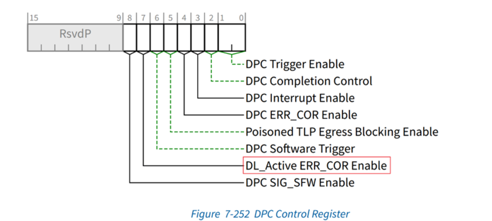

DPC梳理
概述
DPC的全称是downstream port containment，是PCIe Spec 3.1 中新引入的一个功能，是针对root port和pcie switch检测到不可修正错误时候，就会halt下游端口的数据通路，以防止数据损坏的扩散。DPC 提供的这种机制，使软件有机会修正错误。
DPC触发条件是检测到unmasked uncorrectable error 或者是接收到下游发送的ERR_FATAL 或者 ERR_NONFATAL 信息，此外，还提供了一种软件触发DPC的方式，该方式可以为系统软件或者固件提供测试的接口。
当DPC 被触发，它会做出的动作为，DP会立刻设置DPC Trigger Status bit and DPC Trigger Reason field，并且通过设置LTSSM到disable状态来切断当前的link。LTSSM会一直处于disable状态，直到DPC Trigger Status bit 被清除。
当退出DPC以后，LTSSM必须切换到detect 状态，尝试恢复链路。
当DPC被触发后，它会发出的信号为DPC中断或者ERR_COR message。
DPC Extended Capability structure
上图列出了DPC extended capability 的结构，其ID 为 1Dh。
其主要包括一组能力、控制和状态寄存器，以及一组RP PIO功能的寄存器。
寄存器具体的功能在后续的章节会陆续涉及到。
DPC 功能的开启
DPC功能默认是关闭的，如需开启这个功能，可以通过DPC control register进行控制。
通过向DPC Trigger Enable写入不同的数据，可以配置DPC不同的触发条件。
● 当 DPC Trigger Enable field配置 01b，DPC使能，当检测到未屏蔽的不可纠正错误或者收到ERR_FATAL Message则触发DPC。
● 当 DPC Trigger Enable field配置 10b，DPC使能，当检测到未屏蔽的不可纠正错误或者收到ERR_NONFATAL or ERR_FATAL Message则触发DPC
软件触发DPC
DPC 为软件或者固件的开发测试提供了一种软件触发机制。软件触发DPC的前提条件是：
● DPC 处于enable 状态，
● 并且当前Port不处于DPC中，
● DPC Software Triggering Supported bit in DPC Capability register为0x1，
那么就可以使用软件来触发DPC。
写1b 到DPC Software Trigger bit in the DPC Control Register，那么该Port就会进入DPC 模式。
可以读取DPC Status Register寄存器来判断当前触发是否成功。
如果触发成功，
DPC Trigger Status为1，表示当前处于DPC状态；
DPC Trigger Reason为0x11，表示当前触发状态由DPC Trigger Reason Extension来表示
DPC Trigger Reason Extension为0x01，表示当前是由DPC software Trigger 触发
DPC 中断
支持DPC的DSP必须支持DPC中断产生。
DPC中断配置 DPC Control Register内DPC Interrupt Enable bit使能。
DPC中断状态通过 DPC Status Register内DPC Interrupt Status bit反映。

DPC ERR_COR signaling
支持DPC的DSP必须支持 ERR_COR 信号，不管是否支持 Advanced Error Reporting (AER)。
DPC ERR_COR信号独立于DPC中断进行管理，并且允许同时使用这两种机制。
DPC ERR_COR signaling is enabled by the DPC ERR_COR Enable bit in the DPC Control Register.
其他要求：
● the Correctable Error Reporting Enable bit in the Device Control Register
● or the DPC SIG_SFW Enable bit in the DPC Control Register is Set
PCIe Spec 建议OS 使用DPC中断，FW 使用ERR_COR signaling
退出DPC
软件可以通过清除DPC Trigger Status bit in DPC Status Register 使当前Root port退出DPC。
为保证LTSSM 有足够时间进入到disbale状态，软件必须等到Data Link Layer Link Active bit in the Link Status Register reads 0b才可以离开DPC。

同时为了保证Root Port 有足够时间来完全清理内部的活动，RP 离开DPC时候也要确保DPC RP Busy bit reads 0b.
DL_Active ERR_COR signaling
当退出DPC以后，链路会尝试重新恢复。如果恢复到active状态，可以选择发送DL_Active ERR_COR 信号。
DL_Active 状态可以通过读取 the Data Link Layer Link Active bit in the Link Status Register得知。就是前文中退出DPC的前置条件中提到的那个bit。
数据链路状态改变也是有中断信号的，这个ERR_COR信号和中断不冲突，可以同时使用。只是ERR_COR信号只能表示链路恢复到active状态，而中断表示的是状态改变。
开启 DL_Active ERR_COR signaling 需要在DPC control寄存器中进行设置:

和DPC ERR_COR 信号一样，它也需要额外的要求：
● the Correctable Error Reporting Enable bit in the Device Control Register
● or the DPC SIG_SFW Enable bit in the DPC Control Register is Set
对于给定的DL_ACTIVE事件，如果端口要发送ERR_COR消息和MSI/MSI-X事务，则端口必须在发送MSI/MSI-X事务之前发送ERR_COR消息。
如果使用INTx机制发出DL_ACTIVE中断信号，则没有相应的要求，因为在路由时，INTx消息不一定保持相对于ERR_COR消息的顺序。
eDPC
简介
eDPC 与DPC功能同样是PCIe Spec 3.1中引入的新功能，其是 在DPC功能引入后，是对DPC功能增加了新的扩展功能，其扩展功能主要实现了对RP PIO（Root Port Programmed I/O）错误的控制。
RP PIO错误控制功能是指PCIe设备在使用RP PIO模式进行数据传输时，对数据传输过程中出现的错误进行控制和处理的功能。
通过DPC capability 寄存器的bit5 我们可以知道当前RP是否支持eDPC功能。
PCIe三种传输模型
PIO 是PCIe 三种传输模型之一，另外两种是DMA和P2P。可以通过下方三个图来简要了解三种传输方式的区别。

RP PIO处理错误类型
主要管理三种错误：
Completion with Unsupported Request status (UR Cpl)
Completion with Completer Abort status (CA Cpl)
Completion Timeout (CTO) errors
每种类型又可以具体分为，Configuration Requests， I/O Requests， Memory Requests， 因此RP PIO一共有9种错误需要关注。
AER对UR CA 和CTO类型的错误也有相应的处理机制，但是其和RP PIO error control 并不冲突，我们可以通过下面两幅图来加以区分。
当RP作为Completer时， UR 和 CA error会被记录在AER中。
当RP作为Requester时， UR 和 CA error会被记录在RP PIO中，而CTO error 既可以记录在AER中也可以记录在RP PIO中，或者同时记录。
规范建议，如果软件没有在RP PIO中屏蔽CTO error，那么软件应该在AER 中屏蔽CTO error，以避免意外交互。

错误处理方式
RP PIO error control机制主要通过DPC extended capability中的一系列寄存器来实现。可以看出红框中RP PIO 相关寄存器和AER capability中的寄存器非常相似，其工作原理也非常相似。
The RP PIO Status, Mask, and Severity registers 行为类似于 AER 中的the Uncorrectable Error Status, Mask, and Severity registers。
当一个RP PIO错误被检测到时，且该错误未屏蔽，RP PIO Status Register中的相关位被设置，并且错误被记录在RP PIO log registers（假设RP PIO错误日志资源可用）。
当一个RP PIO错误被检测到，而它被屏蔽时，相关的状态位仍然在RP PIO Status Register中设置，但是这个错误不会触发DPC，也不会记录在RP PIO log registers中。
每个未被屏蔽的RP PIO错误被处理为uncorrectable or advisory（警告），由 RP PIO Severity Register中相应位的值决定。
如果相关的 Severity bit被设置，错误被处理为uncorrectable，触发DPC(假设DPC被启用)，并用DPC中断和/或ERR_COR(if enabled)发送此事件的信号。
如果相关的Severity bit为Clear，则错误作为警告处理(不触发DPC)，并使用ERR_COR(if enabled)发出信号。
The RP PIO Header Log Register, RP PIO ImpSpec Log Register, and RP PIO TLP Prefix Log Registers统称为 RP PIO log registers。
The RP PIO First Error Pointer, RP PIO Header Log, and RP PIO TLP Prefix Log行为类似于 AER 中的the First Error Pointer, Header Log, and TLP Prefix Log。
RP PIO Header Log用来记录发生RP PIO error的 TLP header;
RP PIO ImpSpec Log Register是一个可选实现寄存器 ，用来记录request TLP 源，当DPC capability寄存器中的RP Log Size field大于5，表明这个寄存器需要实现；
RP PIO TLP Prefix Log Register是一个可选实现寄存器，用来记录发生RP PIO error的 TLP Prefix，这个寄存器具体实现几个DW，由DPC capability寄存器中的RP Log Size field 来确定：
● Number = RP Log Size - 5； if RP Log Size <=9;
● Number =4；if RP Log Size >9;
Linux Kernel 中对DPC的处理
初始化DPC与注册中断
梳理了一下Linux kernel 5.10.201 中DPC RAS的相关流程，为验证、开发C2000 固件中 DPC RAS 做一些参考。
从dpc_probe 开始看起，这里开始初始化DPC并注册中断处理函数。
● line356：检查是否支持 PCIe AER，以及 DPC 功能是否支持。如果不支持，返回错误代码 -ENOTSUPP。
● line359：调用函数 devm_request_threaded_irq 来请求指定 dev->irq 的中断处理程序。如果成功，将结果赋给 status 变量。
注：devm_request_threaded_irq 是 Linux 设备驱动中的一个函数，用于请求中断处理程序（IRQ）并将其与线程绑定。这里最重要的两个回调函数dpc_irq 和 dpc_handler。前一个为顶半，后一个为底半。这个翻译很糟糕。英文是top half 和 bottom half，感觉英文更好理解一下。就是把中断处理函数分为两部分，前一半的回调函数放比较重要、优先级比较高的内容，后一半放优先级比较低的部分。底半部可以被新的中断打断，这与顶半部的不同之处在于，顶半部往往被设计成不可中断。顶半部和底半部的结合能够在中断处理中找到平衡点，使系统具有更好的响应能力。
● line362：注册完中断处理函数还会检查一下注册的状态，如果失败了就返回，如果成功了就继续往下跑；
● line368：这里读取DPC capability和control 寄存器，并存下来；
● line371：配置control寄存器，忽略原来寄存器中的中断位和enable位，重新设置为Fatal error 触发，开启中断，并将结果写回到control寄存器；
上半部中断处理函数
dpc_irq是上半部中断处理函数，这部分内容不会被其他中断打断。
● 这部分首先读取DPC status 寄存器，判断是否真的有中断发生，或者status寄存器全部为1，如果满足其中之一，那么就直接返回，认为没有中断；
● 如果有中断，就向status寄存器写0x8，将dpc中断清除（写1b 清除）。
● 如果 DPC 状态寄存器中的触发位被置位，则执行return IRQ_WAKE_THREAD;
返回 IRQ_WAKE_THREAD，表示需要唤醒一个线程来处理中断。
● 如果触发位没有被置位，返回 IRQ_HANDLED，表示中断已经被处理。
下半部中断处理函数
dpc_handler是下半部中断处理函数，上半部处理完会开始跑这个函数。
● 调用了一个名为 dpc_process_error 的函数，并传入了 pdev 作为参数。这个函数的作用是初步处理 DPC 错误。
● 调用了一个名为 pcie_do_recovery 的函数，并传入了三个参数：pdev、pci_channel_io_frozen 和 dpc_reset_link。这个函数的作用是执行 DPC 的具体恢复操作。
● 返回 IRQ_HANDLED，表示中断已经被处理。
错误处理函数
● 首先读取status 和 source ID 寄存器；
● 打印寄存器raw data，再解析并打印出错的原因；
● line287：如果设备支持 DPC RP 扩展，并且 reason 为 3，ext_reason 为 0，表示当前进入DPC的原因是检测到RP PIO错误，则执行dpc_process_rp_pio_error。
● line289：否则，如果 reason 为 0 （unmasked uncorrectable error），并且能够获取 AER（Advanced Error Reporting）uce严重性信息和设备错误信息，则打印错误信息后，清除AER非致命错误状态和致命错误状态。
● dpc_process_rp_pio_error （待整理）
错误恢复函数
pcie_do_recovery(pdev, pci_channel_io_frozen, dpc_reset_link);
这个函数具体实现在err.c 中，用于执行 PCIe 设备的错误恢复。函数的具体梳理，稍后补充。
简单来说，它会执行以下步骤：
○ 通知所有受影响的设备驱动程序，包括多功能卡上的多个实例，以避免在自旋循环中死锁。
○ 根据每个驱动程序的要求，执行重置操作（例如重新启用 I/O 或请求槽位重置）。
○ 在重置和/或重新启用 I/O 后，再次通知所有驱动程序，以便它们可以执行所需的设备设置/配置。
○ 最后，发送“恢复正常操作”事件。
可以看到第三个参数是 dpc_reset_link 这个函数是在dpc.c 中实现的，与DPC 相关。
第三个参数名字是 reset_subordinates，它的作用是用于执行设备的子设备重置操作。具体来说：
● 当发生 PCIe 错误时，pcie_do_recovery 函数会根据错误类型和设备类型执行不同的恢复操作。
● 对于一些设备，例如 Root Port、Downstream Port 或 RCEC，错误恢复会在设备本身上执行，同时也包括其下属的子设备。
● 但对于其他设备，例如 Endpoint 等，错误恢复会在设备本身以及同一 Port 下的其他设备上执行。
● 如果存在需要重置子设备的情况，reset_subordinates 参数会传递一个函数指针，用于执行子设备的重置操作
dpc_reset_link 就是传递进去的函数指针，先梳理一下该函数的内容：
line151：设置一个标志位，表示正在进行 DPC 恢复。
line163：等待链路处于非活动状态，然后清除 DPC 触发状态。pcie_wait_for_link 函数会等待链路变为指定的状态（这里就是inactive状态），最多等待 100 毫秒。如果在这个时间内链路达到了指定状态，就返回 true，否则返回 false。
如果链路没有达到我们想要的状态，打印一条警告信息，表明我们在规定的时间内没有等到期望的状态。
打印完就继续执行后面的内容了。
line172：向status寄存器bit0写1b，清除DPC 状态；（这里和PCIe 5.0 Spec 有点不相符，当然也可以理解为对于异常情况的一种处理策略，spec 中说要等到链路处于disabled 状态再清DPC，但是这里等了100ms，即使没等到，打印了warning就继续清DPC 状态了。 固件中也可以参考这种策略。）

line175：如果等待次级总线准备就绪失败，清除PCI_DPC_RECOVERED 状态，返回值设置为PCI_ERS_RESULT_DISCONNECT；
line179：设置PCI_DPC_RECOVERED 状态，返回值设置为PCI_ERS_RESULT_RECOVERED ；
line184：清除 DPC 恢复标志位，唤醒等待队列中的所有进程。然后返回。